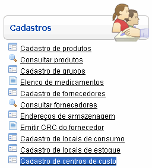
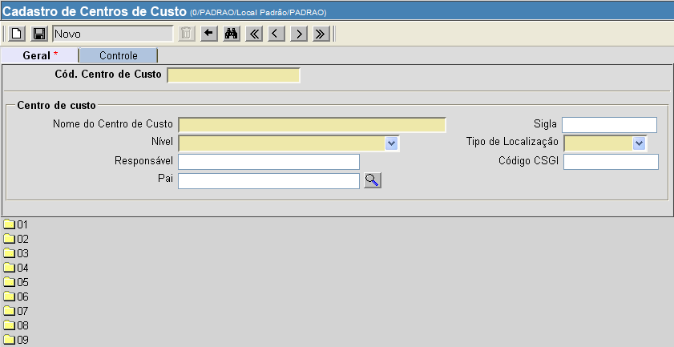

Cadastro de Centros de Custo [ Voltar ]
Utilize este formulário para cadastrar no sistema centros de custo
existentes.
O formulário "Cadastrar
centros de custo" encontra-se dentro do menu "Cadastros".

Ao clicar no formulário, o sistema exibirá a seguinte
tela:

1°
Passo: preencha as informações sobre o centro de custo que deseja
cadastrar. Os campos em
amarelo são obrigatórios.
- Cód.
Centro de Custo. Especifique neste campo o código para o
centro de custo que deseja criar.
- Nome do
Centro de Custo. Informe um nome para o novo centro de
custo.
- Sigla.
Informe uma sigla identificadora do centro de custo.
- Nível.
Selecione o nível adequado a partir da lista de opções
disponíveis.
- Tipo de
Localização. Informe se o centro de custo é interno ou vinculado.
- Responsável.
Se necessário, informe aqui o nome do responsável.
- Código CSGI. Se houver, deposite neste campo
o código da CSGI.
- Pai.
Clique no botão
 [Procurar]
para selecionar o centro de custo em posição hierarquicamente superior. [Procurar]
para selecionar o centro de custo em posição hierarquicamente superior.
2° Passo: clique no botão  para concluir o cadastro do
centro de custo. para concluir o cadastro do
centro de custo.
Ir
para o topo da página
|